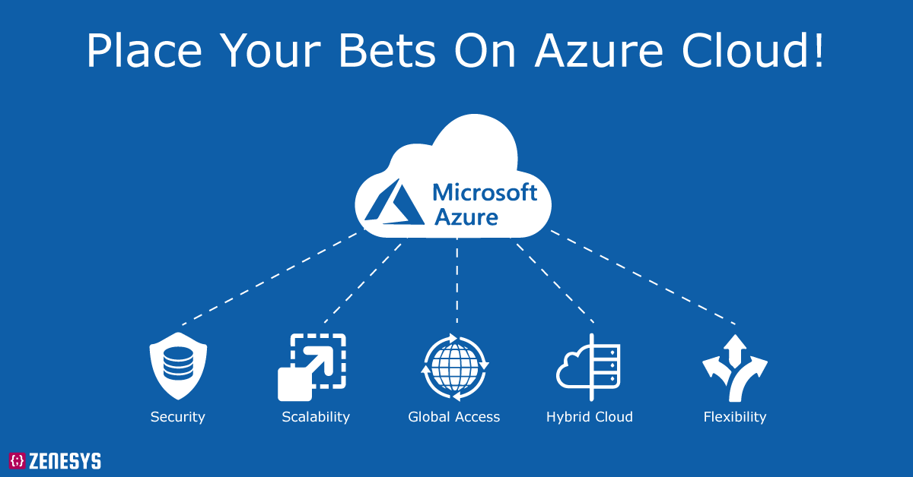
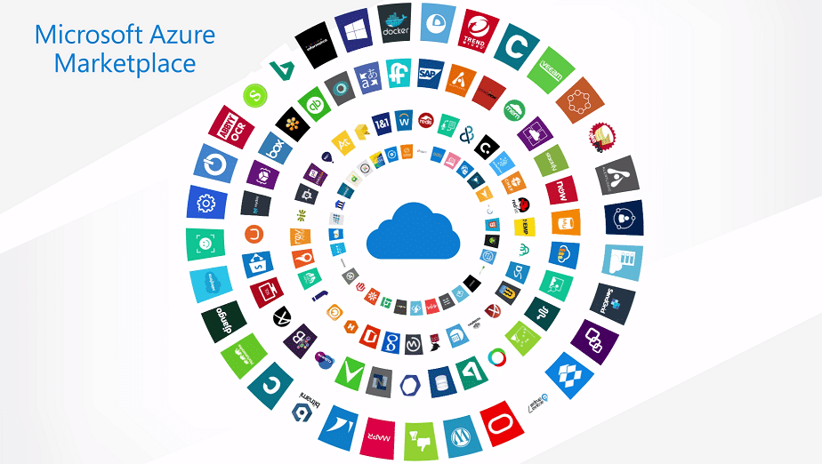

Microsoft Azure est la collection complète de Microsoft d'alternatives au matériel et aux services physiques basées sur le cloud. Les machines virtuelles Azure exécutent tous les produits serveurs de Microsoft ainsi qu'une large gamme de produits tiers, y compris les distributions Linux et tiers.
Qu'est-ce que Microsoft Azure ?
Microsoft Azure est un vaste ensemble de services informatiques en nuage en constante expansion qui sont à la disposition des entreprises, des développeurs, des organismes gouvernementaux et de tous ceux qui veulent créer une application ou exécuter une entreprise sur Internet sans avoir à utiliser de matériel ou de logiciel serveur. C'est le segment d'activité de Microsoft qui a connu la croissance la plus rapide ces dernières années et qui dépassera probablement Windows en termes de revenus d'ici deux ou trois ans.
Si les cyniques moquaient encore il y a peu le concept d'informatique dans les nuages, déclarant que "le cloud n'est que l'ordinateur de quelqu'un d'autre", cette critique semble aujourd'hui perdre de son sens devant la multiplication des services hébergés sur le cloud et disponibles dans le commerce. Mais cette simplification excessive ne décrit qu'une petite partie de l'activité d'Azure, qui se définit comme une activité d'Infrastructure as a Service (IaaaS), dans laquelle les services dans le cloud remplacent le matériel physique.
La gamme complète des services Microsoft Azure couvre de fait bien plus que la simple relocalisation de serveurs sur site vers le cloud. En plus des ressources IaaaS, vous disposez d'une gamme complète d'options Platform as a Service (PaaS) et Software as a Service (SaaS), permettant à votre entreprise d'accéder aux services cloud sans avoir à gérer un serveur. Par exemple, vous pouvez créer un site Web basé sur WordPress ou construire un site sur JS Node de base sans avoir à configurer (ou patcher) le serveur Windows ou Linux sous-jacent.
Ne pas se soucier de la sécurité ou de la fiabilité de l'infrastructure sous-jacente
De plus, les développeurs d'applications et de sites et services Web peuvent utiliser le stockage et les services Azure comme éléments constitutifs, sans avoir à se soucier de la sécurité ou de la fiabilité de l'infrastructure sous-jacente.
Microsoft a annoncé Azure en 2008. Il a fait ses débuts publics deux ans plus tard, en janvier 2010, sous le nom de Windows Azure et a été rebaptisé Microsoft Azure en 2014. Un changement de nom qui est loin de se résumer à de la seule cosmétique. Au lieu de cela, il s'agissait du reflet de l'étendue des services cloud d'Azure, qui s'étend bien au-delà des seules offres basées sur Windows.
Fin 2017, en fait, Microsoft a rapporté que 40% de toutes les machines virtuelles d'Azure fonctionnaient sous Linux, contre moins d'un tiers un an auparavant. L'infrastructure mondiale d'Azure comprend des centres de données dans 54 régions, couvrant 140 pays. Microsoft maintient également deux régions d'Azure Government Secret qui se trouvent dans des endroits non divulgués.
Un autre avantage de Microsoft Azure est celui de la conformité aux différents règlements en vigueur sur la protection des données. Par exemple, Azure est le premier fournisseur de Cloud public à recevoir la certification FedRAMP aux Etats-Unis, ou celle d’Hébergeur de données de Santé en France. Cette dernière lui confère le droit de stocker des données de santé sensibles sur ses serveurs.
Quels sont les avantages de Microsoft Azure ?
L'avantage le plus évident des offres IaaaS d'Azure est que votre entreprise n'a pas besoin d'acheter, de configurer, de maintenir et de réparer du matériel pour exécuter des charges de travail dans le cloud. Les économies commencent par le coût du matériel, mais englobent un nombre beaucoup plus élevé de coûts indirects, y compris l'espace physique requis pour héberger ces serveurs ainsi que l'électricité nécessaire à leur fonctionnement.
Parce que les ressources basées sur Azure sont virtuelles, elles ne peuvent pas tomber en panne de manière inattendue et entraîner des temps d'arrêt pendant que vous attendez des réparations ou un remplacement. Les ressources matérielles virtuelles peuvent augmenter ou diminuer d'une manière que le matériel physique ne peut pas le faire, ce qui permet de faire face à des pics de trafic soudains vers un site Web basé sur Azure.
Les grandes entreprises qui doivent répondre aux exigences mondiales en matière de confidentialité pour le stockage et le transfert des données peuvent facilement transférer les données et les services vers une région de leur choix.
Pour les développeurs, Azure offre un accès instantané aux services de développement d'applications mobiles, de conception d'appareils IoT, de connexion au stockage en ligne et aux ressources de base de données, et de déploiement de la technologie des conteneurs. En outre, Microsoft a beaucoup investi dans l'apprentissage machine et les outils d'IA pour les développeurs.
Qu'est-ce que l'offre Infrastructure-as-a-service (IaaS) d'Azure ?
L'un des scénarios d'utilisation les plus basiques d'Azure IaaaS est le remplacement d'un serveur physique par un serveur virtuel fonctionnant dans le datacenter d'Azure, éliminant ainsi le besoin de maintenance matérielle.
Ce serveur peut exécuter n'importe quelle version de bureau ou de serveur Windows prise en charge, jusqu'à et y compris Server 2019. Ou vous pouvez choisir parmi une longue liste de distributions Linux, également dans une large gamme de versions supportées, incluant Ubuntu Server, Red Hat Enterprise Linux, FreeBSD, et même Oracle Linux. Dans l'énorme Azure Marketplace, vous pouvez trouver des serveurs virtuels prêts à l'emploi pour presque toutes les tâches, y compris SQL Server, Docker, SAP Hana, et (pour aller avec ce serveur Oracle Linux) Oracle Database.
Azure vous permet en définitive de construire une infrastructure de bureau virtuel (VDI) complète dans le cloud d'Azure et de gérer le tout avec des outils tiers. A titre d'exemple, vous pouvez ainsi vous inscrire à Citrix Virtual Desktops Essentials directement à partir du portail Azure en permettant une option VDI traditionnelle d'un fournisseur de services déjà bien connu dans le monde des affaires.
Quels sont les services concurrents d'Azure ?
Azure est le deuxième fournisseur de cloud computing, loin derrière Amazon Web Services (AWS), mais bien en avance sur ses concurrents. Parmi les autres concurrents d'Azure, citons Google Cloud Platform propose un ensemble similaire d'infrastructures et de services applicatifs basés sur l'infrastructure globale du géant de la recherche.
D'autres entreprises, dont SalesForce et Oracle, offrent un sous-ensemble de services en nuage qui visent principalement les clients existants de ces entreprises.
Microsoft Azure : combien ça coûte ?
Plutôt que d’installer des serveurs sur site, ou de louer des serveurs physiques au sein de Data Centers traditionnels, Microsoft Azure propose à ses clients un système de facturation basé sur la consommation de ressources.
Les prix varient en fonction des types de services et de la capacité de stockage utilisés, et de l’emplacement physique où sont hébergées les instances Azure. Par exemple, le prix du stockage varie en fonction des options de redondance et de distribution choisies. Ainsi, les entreprises peuvent réaliser des économies en ne payant que ce qu’elles consomment.
Notons que le programme Microsoft for Startups permet aux startups éligibles de profiter de 10000 dollars de crédits Azure pendant un an. Pour profiter de cette offre, il est nécessaire d’être en collaboration avec l’un des 200 accélérateurs de startups partenaires de Microsoft.
De même, le programme Azure for Students permet aux étudiants de profiter de 100 dollars de crédits à utiliser dans un délai de 12 mois. Ce programme offre aussi un accès à 25 produits tells que les machines virtuelles et le stockage Cloud.